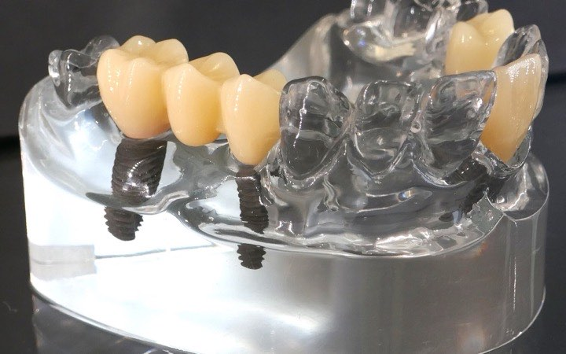
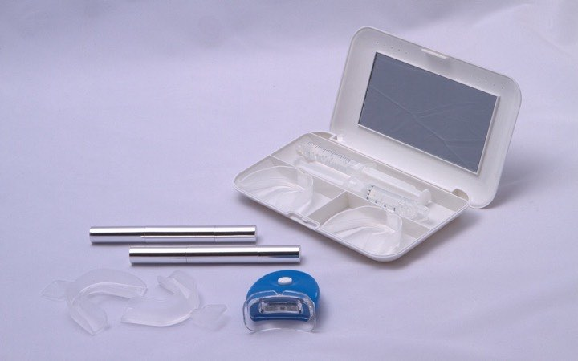
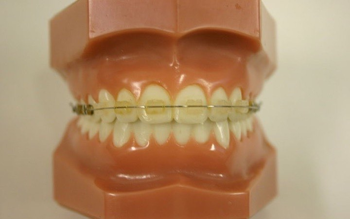
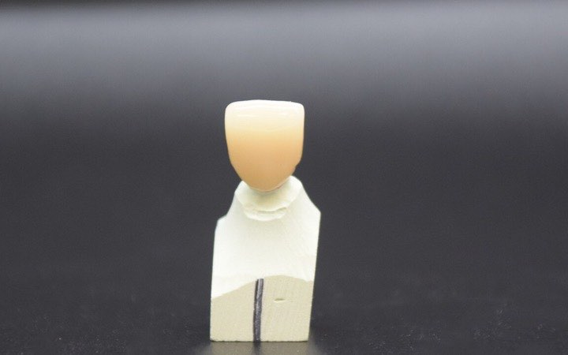

Treatments and costs
We provide all NHS general dentistry, and some private treatments. Phone us to ask about any treatment.
NHS treatment
We aim to be your family NHS dental practice. We provide all the treatments available on the NHS.
- Check-ups Free for everyone in Scotland.
- Fillings
- Taking out teeth Extractions.
- Root canal treatment Treatment inside a tooth to save it.
- Crowns and bridges To cover a damaged tooth or fill a gap.
- Dentures False teeth.
NHS charges for common treatments
This is what you pay if you do not get free NHS treatment. You will never pay more than £384 for one course of treatment.
| Treatment | You pay |
|---|---|
| Check-ups and X-rays | |
| Check-up | Free |
| Check-up and advice on keeping your mouth healthy (can include a scale and polish) | £17.32 |
| Two small X-rays | £12.16 |
| One large X-ray of teeth and jaws | £14.92 |
| Gums and fillings | |
| Gum cleaning, over 1 to 4 visits | £35.52 to £142.08 |
| Small white filling (front tooth) | £23.36 |
| Small metal filling (back tooth) | £14.00 |
| Large metal filling (back tooth) | £29.92 |
| Root canals, crowns and extractions | |
| Root canal treatment | £104.68 to £169.20 |
| Extra fee to redo a root canal | £48.60 |
| One crown | £164.52 to £204.76 |
| Taking out a tooth (simple) | £31.80 |
| Taking out a tooth (surgical or complex) | £60.76 to £83.20 |
| Dentures | |
| Full upper and lower dentures | £379.60 |
The most you will pay for one course of NHS treatment.
Your own cost depends on your treatment plan. We will tell you what you will pay before your treatment starts. You can ask for an itemised bill.
NHS charges can change. If this table and NHS inform differ, NHS inform is right.
Private treatment
Treatments for how your teeth look are usually private. Phone us to ask for a quote.
-

Dental implants
A fixed way to replace one or more missing teeth.
Ask us for a quote
-

Tooth whitening
A professional whitening kit that you use at home.
Ask us for a quote
-

Teeth straightening
Short-term braces to straighten crooked teeth more quickly.
Ask us for a quote
-

Cosmetic crowns and veneers
Strong crowns and veneers with no metal, for a natural look.
Ask us for a quote
-
Facial aesthetics
Anti-wrinkle treatment and dermal fillers.
Ask us for a quote
Photos from Wikimedia Commons: implants by Tiia Monto (CC BY 4.0); whitening kit by Teethguru (CC BY-SA 3.0); braces by Hanabishi (public domain); crown by James Roback (CC BY-SA 4.0). All cropped and resized.


Prices on our old website may be out of date. Always phone to check the price before you book.
Questions about treatment
Can I have tooth whitening or implants on the NHS?
Usually not. Treatments for how your teeth look are usually only available privately. This includes tooth whitening and dental implants.
Can I mix NHS and private treatment?
Yes, even on the same tooth. For example, you could have NHS root canal treatment with a private white filling.
We will tell you which parts are NHS and which are private, and what each costs.
Will I get a written treatment plan?
Yes. General Dental Council standards say dentists must give you a written treatment plan with the cost. It must say if the treatment is NHS or private.
Why might my treatment take longer to start?
For some larger NHS treatments, we must ask the NHS for approval first. This can delay your treatment a little.
Can I pay for implants monthly?
Our old website mentioned monthly payments for implants. Phone us to check if we still offer this.
From NHS inform and the General Dental Council. Read the GDC standards
Urgent advice: In pain or need help urgently?
We are open: 01955 609949
We are closed: NHS 24 on 111
Call 999 if swelling makes it hard to breathe, speak or swallow.